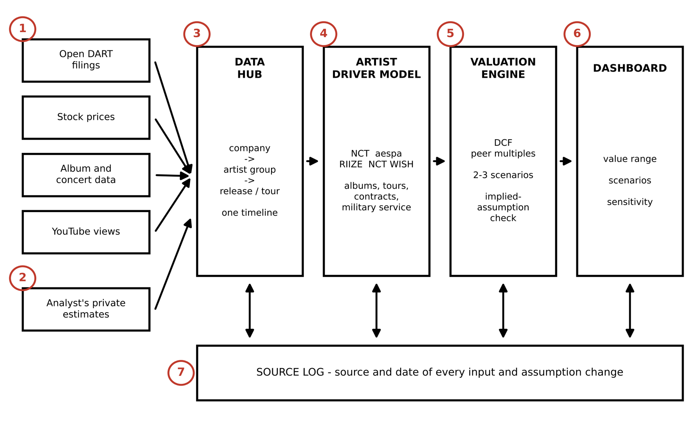
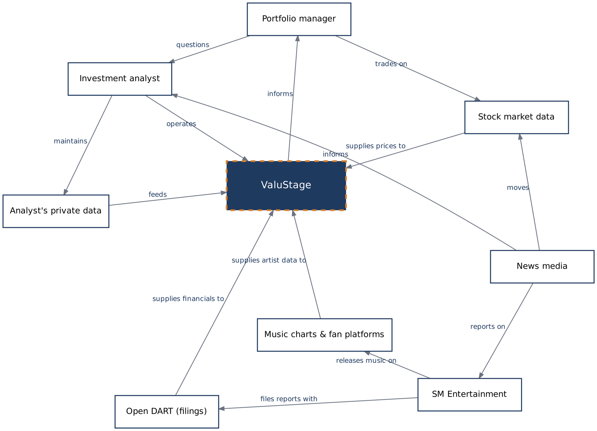

In three years, one SM Entertainment share has sold for anywhere from KRW 82,500 to KRW 150,000.
ValuStage is a valuation tool for analysts who cover artist-driven entertainment companies. It links assumptions about each artist group to a range of company value, and shows what the current share price already assumes.
Deal prices from Toh & Bae (2023) and Bloomberg News (2025); market price from Yahoo Finance. The violet band is the ValuStage DCF range across the Bear, Base and Bull scenarios, calculated in your browser with illustrative inputs.
Why this company is hard to value
SM Entertainment (KOSDAQ: 041510) is the agency behind NCT, aespa and RIIZE, with 2025 revenue of about KRW 1.17 trillion (SM Entertainment, 2026b). Much of its value rests on a few artist groups and on events such as contract expiries, military service, tours and scandals. Comebacks and debuts tend to lift entertainment stocks, while dating news and scandals push them down (Ariani & Husodo, 2024); in the 2019 Burning Sun scandal, SM shares fell more than 20% in three weeks (CNBC, 2019).
None of these drivers appear in the financial statements, and a standard model hides them inside one growth rate. ValuStage models revenue group by group, so an analyst can ask a concrete question, such as what happens to value if aespa does not renew its contract in 2027.
What analysts need
Needs from the customer affinity process, ranked by importance. The primary users are investment analysts at an asset manager that covers Korean entertainment stocks.
- 1The model fits how K-pop companies make moneyBusiness fit
- 2I can trust the dataData quality
- 3I can see what changes the valueScenario insight
- 4I can defend every numberTransparency
- 5It is quick and easy to useEase of use
How ValuStage works
Public data and the analyst's own estimates flow through a data hub into the artist driver model and the valuation engine, and the results appear on one dashboard. A source log records where every input came from.

- 1Public data inputs
Filings, stock prices, album and concert data and YouTube views, each with its source and date. - 2Private data vault
Keeps the analyst's own estimates separate from public data. - 3Data hub
Links every record to a company, artist group, release or tour on one timeline. - 4Artist driver model
Albums, tours, contract dates and military service for each group. - 5Valuation engine
DCF and peer multiples, two or three scenarios and the implied-assumption check. - 6Dashboard
Value range, scenarios and a sensitivity chart of the key assumptions. - 7Source log
Source and date of each input and every assumption change.
Who and what it connects to
The context diagram shows ValuStage between its users (the investment analyst and the portfolio manager) and its data sources: Open DART filings, stock market data, music charts and fan platforms, news media and the analyst's private data.

What the first version covers
The scope is kept small so a working version is realistic by the end of Spring 2027.
In the first version
- SM Entertainment as the case, with HYBE, JYP and YG as peers
- Financial statements, stock prices and artist-level data for NCT, aespa, RIIZE and NCT WISH
- DCF and comparable-company multiples
- Bear, Base and Bull scenarios, including a contract non-renewal
- The growth rate implied by the share price
- One dashboard with a sensitivity chart
Left for later
- Automatic news monitoring and alerts
- Back-testing the model against past events
- Automatic report export
- Every listed entertainment company
- Automatic data import from Open DART and price feeds (the prototype uses manual entry)
Originating requirements
Each requirement traces to a customer need (N1 to N5) and a use case. The last column shows whether the Excel prototype already meets it; "Partly" means it works with manual steps.
| ID | Requirement | Need | Verification | Excel prototype |
|---|
References
- Ariani, A. W., & Husodo, Z. A. (2024). The impact of celebrity news on entertainment industry stock prices. The Indonesian Capital Market Review, 16(1), Article 4. https://doi.org/10.21002/icmr.v16i1.1169
- Barnett, W. P., Rhee, M., & Kim, S.-H. (2015). SM Entertainment (Case No. IB108). Stanford Graduate School of Business. https://www.gsb.stanford.edu/faculty-research/case-studies/sm-entertainment
- Bloomberg News. (2025, May 27). Tencent Music buys SM Entertainment stake in K-pop bet. https://www.bloomberg.com/news/articles/2025-05-27/tencent-increases-korea-music-exposure-ahead-of-china-k-pop-move
- CNBC. (2019, March 19). K-pop sex scandals are crushing Korean entertainment stocks. https://www.cnbc.com/amp/2019/03/19/k-pop-sex-scandals-are-crushing-korean-entertainment-stocks.html
- SM Entertainment. (2026a). 2Q26 earnings call script [Earnings call transcript]. https://cdn2.smentertainment.com/wp-content/uploads/2026/08/05141207/2Q26_Script_%EC%8B%A4%EC%A0%81_Eng_F-1.pdf
- SM Entertainment. (2026b). 4Q25 earnings release [Investor presentation]. https://cdn2.smentertainment.com/wp-content/uploads/2026/02/11123116/4Q25_Earnings_Eng_vF.pdf
- Spotify for Developers. (2026). February 2026 Web API dev mode changes: Migration guide. https://developer.spotify.com/documentation/web-api/tutorials/february-2026-migration-guide
- Toh, M., & Bae, G. (2023, March 28). Kakao wins control of K-pop powerhouse SM Entertainment. CNN Business. https://abc17news.com/money/cnn-business-consumer/2023/03/28/kakao-wins-control-of-k-pop-powerhouse-sm-entertainment/
- Yahoo Finance. (n.d.). SM Entertainment Co., Ltd. (041510.KQ). Retrieved October 8, 2026, from https://finance.yahoo.com/quote/041510.KQ/